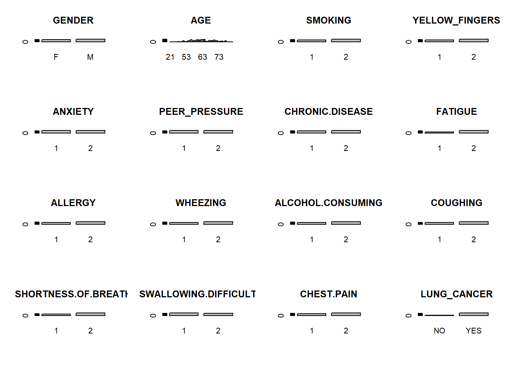

# 데이터 분포 살펴보기par(mfrow=c(4,4))for (col incolnames(df))barplot(table(df[[col]]), main=col)

par(mfrow=c(1,1))
결측치 체크
sum(is.na(df))
[1] 0
1. 로지스틱 회귀분석 실행(LUNG_CANCER ~ AGE)
df$LUNG_CANCER <-factor(ifelse(df$LUNG_CANCER =='YES',1, 0), levels=c(1,0), labels=c('yes', 'no'))# 샘플 나누기df.train <- df[1:150,]df.test <- df[151:309,]# 샘플 잘 나누어졌는지 분포 확인table(df$LUNG_CANCER) /309
yes no
0.8737864 0.1262136
table(df.train$LUNG_CANCER) /150
yes no
0.88 0.12
table(df.test$LUNG_CANCER) /159
yes no
0.8679245 0.1320755
# 로지스틱 회귀분석 진행model <-glm(LUNG_CANCER~AGE , data =df.train, family=binomial(link='logit'))summary(model)
Call:
glm(formula = LUNG_CANCER ~ AGE, family = binomial(link = "logit"),
data = df.train)
Deviance Residuals:
Min 1Q Median 3Q Max
-0.7272 -0.5451 -0.4789 -0.3919 2.2285
Coefficients:
Estimate Std. Error z value Pr(>|z|)
(Intercept) 0.91776 1.74065 0.527 0.5980
AGE -0.04802 0.02897 -1.657 0.0974 .
---
Signif. codes: 0 '***' 0.001 '**' 0.01 '*' 0.05 '.' 0.1 ' ' 1
(Dispersion parameter for binomial family taken to be 1)
Null deviance: 110.08 on 149 degrees of freedom
Residual deviance: 107.33 on 148 degrees of freedom
AIC: 111.33
Number of Fisher Scoring iterations: 5